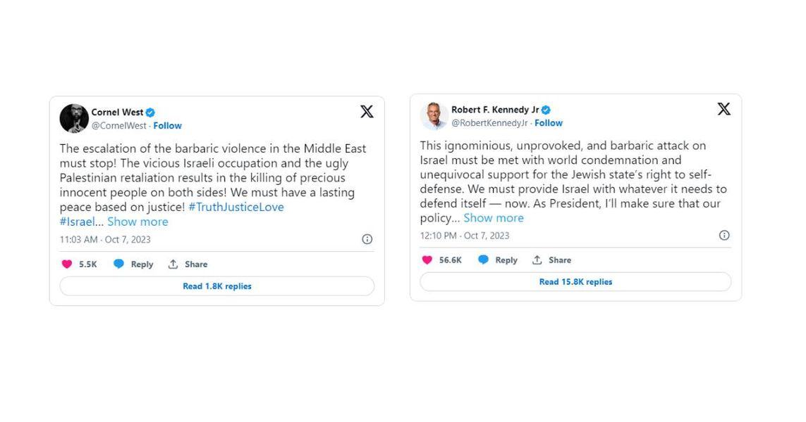

Timeline photos
I have really liked a lot of what I saw from RFK up until now. But "We must provide Israel with whatever it needs to defend itself" is a big deal breaker for me.
Cornel West doesn't have the money or infrastructure or even political savviness as RFK has. But he's really amazing intellectually and philosophically.
I'm all in on Cornel West as of today.